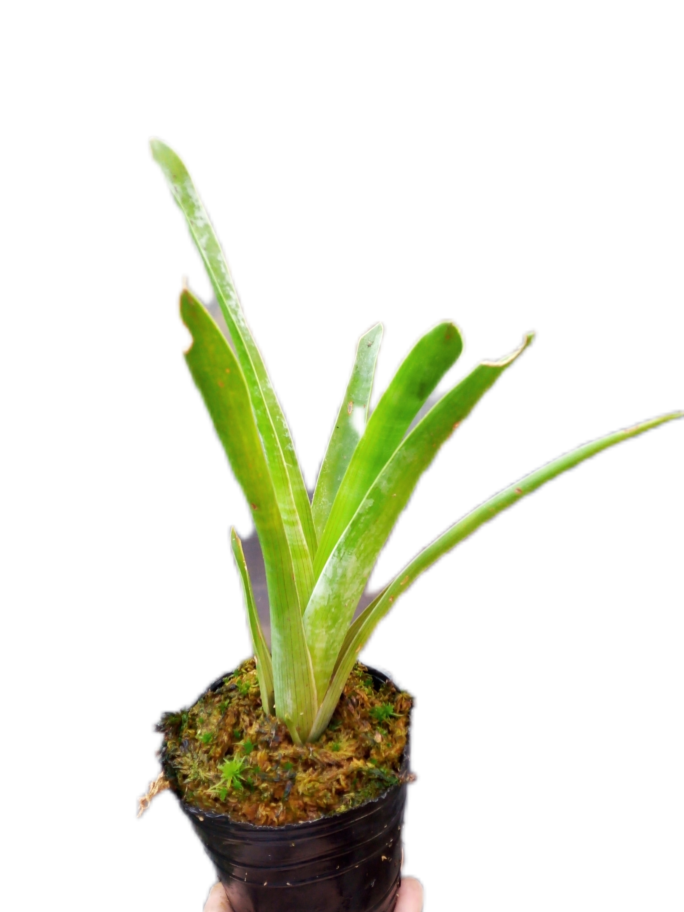
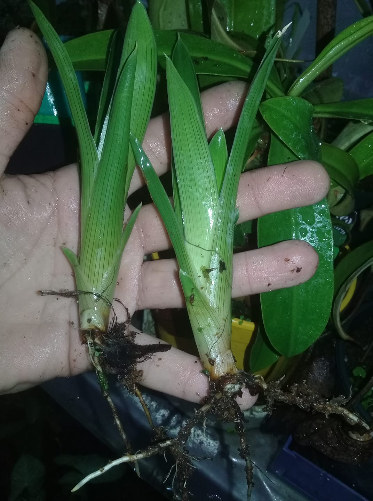
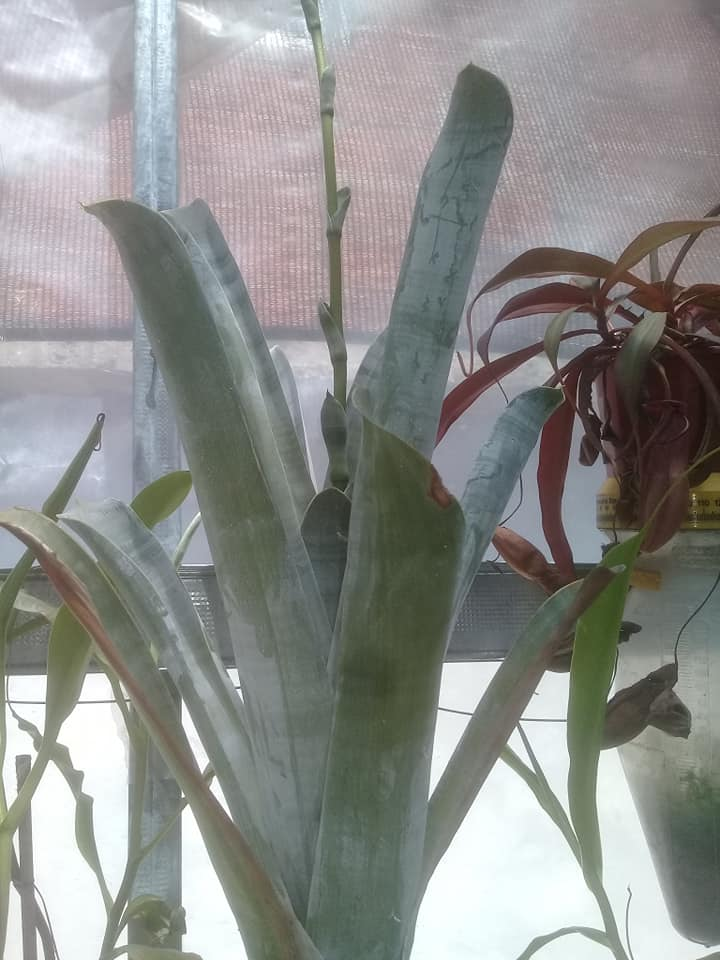

Brocchinia
Habitat Natural
Ubicación : Se encuentra en Venezuela y algunas áreas de Brasil, especialmente en los campos bajos del Monte Roraima.
Condiciones : Crece en condiciones extremas, con alta humedad, en ambientes rocosos y a gran altitud. Las lluvias son frecuentes.
Entorno : Comparte su entorno con las Heliamphoras en los Tepuyes de Venezuela.
Descripcion
Forma: Su crecimiento y forma se asemejan a las bromelias.Con mas exposicion solar algunas especies toman un color dorado , de lo contrario suelen ser verde - claro por fuera y con un tono blanco y mas opaco en su interior debido a la cera que produce
Tamaño
Tamaño máximo: Aprox. 50 cm de altura.
Método de Captura - Pasivo
Mecanismo: Sus hojas tienen una fina capa resbaladiza. Los insectos caen en el centro de la planta, donde son digeridos por los líquidos que produce.
Temperatura
Rango natural: En su hábitat natural, las temperaturas suelen ser frescas, entre 10ºC y 25ºC.
Tolerancia: Tolera temperaturas desde -0ºC hasta 35ºC, aunque el rango ideal durante su crecimiento es entre 20ºC y 25ºC.
Precauciones: Durante épocas calurosas, es importante mantener la planta fresca y protegerla del sol directo cuando las temperaturas superen los 30ºC.
Humedad
Nivel de humedad: Vive en ambientes muy húmedos, pero en general, tolera una humedad ambiental entre el 60% y el 80%.
Riego
Agua: Se debe regar con agua destilada o de lluvia. Estas plantas son usualmente epífitas, por lo que prefieren el riego en el sustrato o por encima.
Estaciones: El riego varía según la estación:
Primavera/Verano: Mantener el suelo húmedo. Es recomendable dejar que la bandeja se seque si el sustrato aún está húmedo, pero sin permitir que se seque por completo.
Otoño/Invierno: Regar solo cuando sea necesario, manteniendo el sustrato húmedo sin dejar agua en la bandeja.
Floracion
Ciclo: Florece al alcanzar la madurez y suele morir después de la floración, dejando de 2 a 7 hijos.
Flores: Produce un racimo largo de hasta 40 cm con muchas flores amarillas, pequeñas y poco vistosas.
Trasplantes
Época: Se puede trasplantar durante todo el año, aunque es preferible hacerlo entre el comienzo de la primavera y el otoño.
Motivo: Principalmente, cuando la maceta actual se ha quedado pequeña para la planta o cuando una maceta más grande podría proporcionar un entorno más estable para las raíces.
Iluminación
Exterior: Puede tener luz filtrada o algunas horas de sol directo. El sol directo refuerza las hojas, pero a temperaturas altas, puede ser perjudicial.
Interior: Colocar junto a una ventana con buena luz y, si es necesario, complementar con iluminación artificial.
Problemas de luz: Si falta luz, las hojas se alargan y se debilitan, doblándose fácilmente. Aumentar la iluminación si esto sucede.
Sustrato
Requerimientos: Estas plantas necesitan un suelo ácido y sin nutrientes. El sustrato más usado es una mezcla de turba rubia y perlita o musgo de sphagnum y perlita, en proporciones 50/50, 60/40 o 70/30.
Resultados: Se obtienen mejores resultados con musgo de sphagnum y perlita en una proporcion del 50/50.
Hibernación
Hibernación: No hiberna, pero en épocas muy frías, por debajo de 5ºC, su crecimiento se ralentiza.
Alimentación
Dieta: Se alimenta de cualquier insecto que entre en sus trampas. No requiere alimentación manual, pero si se desea, es posible hacerlo.

Brocchinia hectchioides

Diviciones de Brocchinia Hechtioides

Brocchinia Hechtioides adulta